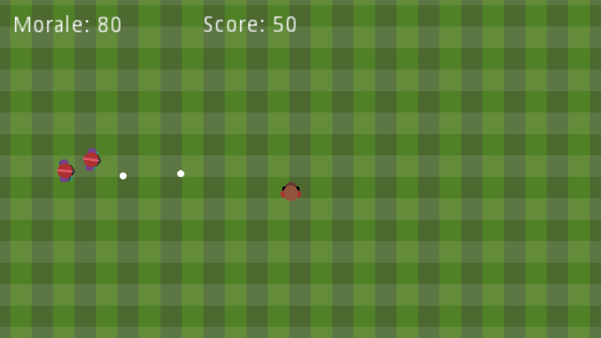

Diese Spiel habe ich für den Github Game Off 2017 entwickelt. Ich habe dafür zum ersten Mal die Godot Engine benutzt und hatte nicht soviel Zeit wie ich mir erhofft hatte, daher der etwas unfertige Zusatnd.
Anscheinend gibt es einige Probleme mit dem Windows Binary und ich habe zurzeit keine Windows Installation um das zu testen, daher habe ich nur das OSX Binary verlinkt.

Print View